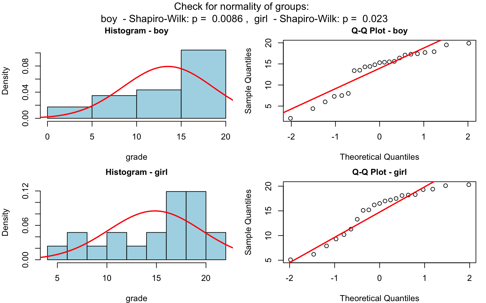
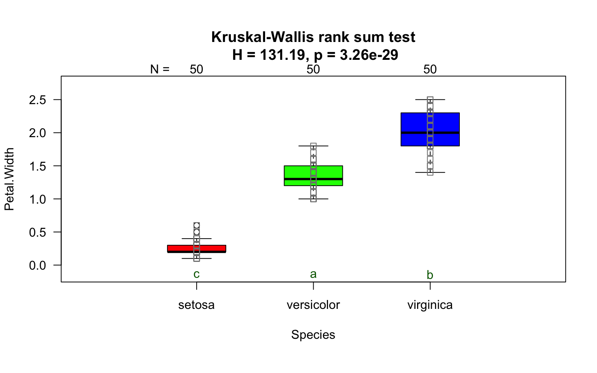
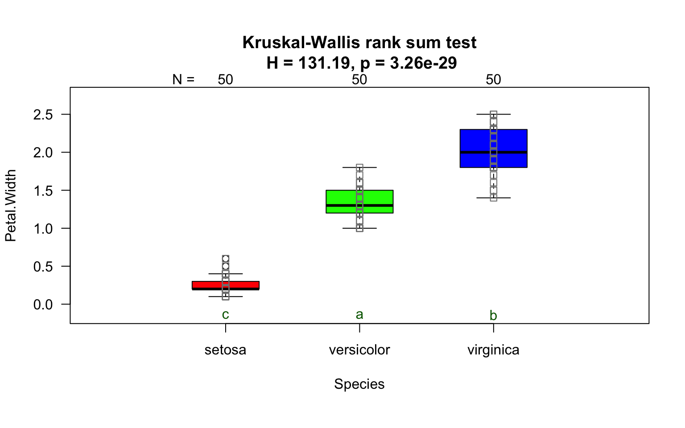
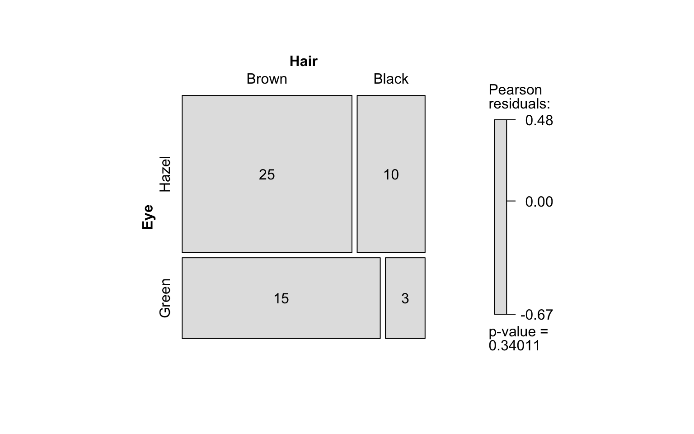
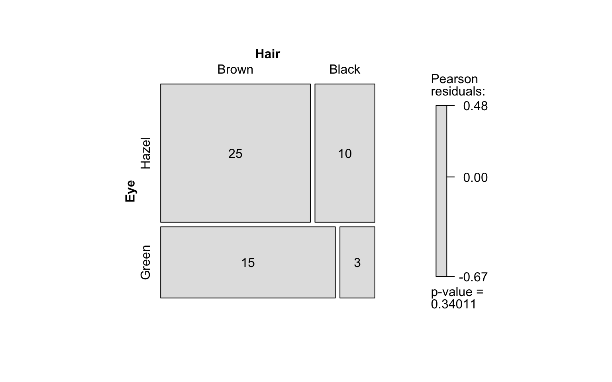
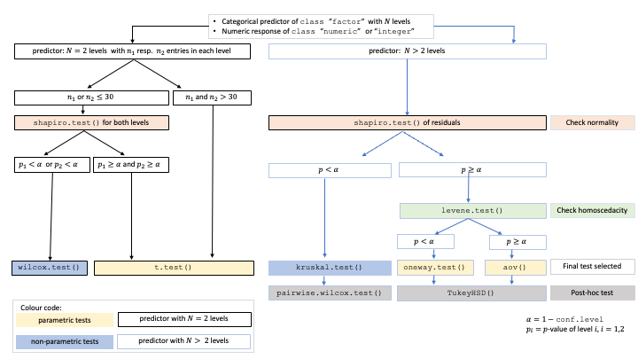

The R package visStatistics allows for rapid visualisation and statistical analysis of raw data. It automatically selects and visualises the most appropriate statistical hypothesis test between two vectors of class integer, numeric or factor.
While numerous R packages provide statistical testing functionality, few are designed with pedagogical accessibility as a primary concern. visStatistics addresses this gap by automating the test selection process and presenting results using annotated, publication-ready visualisations. This helps the user to focus on interpretation rather than technical execution.
The automated workflow is particularly suited for browser-based interfaces that rely on server-side R applications connected to secure databases, where users have no direct access, or for quick data visualisation, e.g. in statistical consulting projects or educational settings.
Getting Started
The function visstat() accepts input in two ways:
# Standardised form (recommended):
visstat(x, y)
# Backward-compatible form:
visstat(dataframe, "namey", "namex")In the standardised form, x and y must be vectors of class "numeric", "integer", or "factor".
In the backward-compatible form, "namex" and "namey" must be character strings naming columns in a data.frame named dataframe. These column must be of class "numeric", "integer", or "factor". This is equivalent to writing:
To simplify the notation, throughout the remainder, data of class numeric or integer are both referred to by their common mode numeric, while data of class factor are referred to as categorical.
The interpretation of x and y depends on their classes:
If one is numeric and the other is a factor, the numeric must be passed as response
yand the factor as predictorx. This supports tests for central tendencies.If both are numeric, a simple linear regression model is fitted with
yas the response andxas the predictor.If both are factors, a test of association is performed (Chi-squared or Fisher’s exact). The test is symmetric, but the plot layout depends on which variable is supplied as
x.
visstat() selects the appropriate statistical test and generates visualisations accompanied by the main test statistics.
Examples
Numerical response and categorical predictor
When the response is numerical and the predictor is categorical, test of central tendencies are selected.
Welch two sample t-test
Wilcoxon rank sum test
grades_gender <- data.frame(
sex = factor(rep(c("girl", "boy"), times = c(21, 23))),
grade = c(
19.3, 18.1, 15.2, 18.3, 7.9, 6.2, 19.4, 20.3, 9.3, 11.3,
18.2, 17.5, 10.2, 20.1, 13.3, 17.2, 15.1, 16.2, 17.0, 16.5, 5.1,
15.3, 17.1, 14.8, 15.4, 14.4, 7.5, 15.5, 6.0, 17.4, 7.3, 14.3,
13.5, 8.0, 19.5, 13.4, 17.9, 17.7, 16.4, 15.6, 17.3, 19.9, 4.4, 2.1
)
)
wilcoxon_statistics <- visstat(grades_gender$sex, grades_gender$grade)
 
Numerical response and numerical predictor: Linear Regression


Increasing the confidence level conf.level from the default 0.95 to 0.99 leads two wider confidence and prediction bands:


Both variables categorical
Pearson’s Chi-squared test
Count data sets are often presented as multidimensional arrays, so - called contingency tables, whereas visstat() requires a data.frame with a column structure. Arrays can be transformed to this column wise structure with the helper function counts_to_cases():
hair_eye_color_df <- counts_to_cases(as.data.frame(HairEyeColor))
visstat(hair_eye_color_df$Eye, hair_eye_color_df$Hair)

Fisher’s exact test
hair_eye_color_male <- HairEyeColor[, , 1]
# Slice out a 2 by 2 contingency table
black_brown_hazel_green_male <- hair_eye_color_male[1:2, 3:4]
# Transform to data frame
black_brown_hazel_green_male <- counts_to_cases(as.data.frame(black_brown_hazel_green_male))
# Fisher test
fisher_stats <- visstat(black_brown_hazel_green_male$Eye,black_brown_hazel_green_male$Hair) 

Saving the graphical output
All generated graphics can be saved in any file format supported by Cairo(), including “png”, “jpeg”, “pdf”, “svg”, “ps”, and “tiff” in the user specified plotDirectory.
If the optional argument plotName is not given, the naming of the output follows the pattern "testname_namey_namex.", where "testname" specifies the selected test or visualisation and "namey" and "namex" are character strings naming the selected data vectors y and x, respectively. The suffix corresponding to the chosen graphicsoutput (e.g., "pdf", "png") is then concatenated to form the complete output file name.
In the following example, we store the graphics in png format in the plotDirectory tempdir() with the default naming convention:
#Graphical output written to plotDirectory: In this example
# a bar chart to visualise the Chi-squared test and mosaic plot showing
# Pearson's residuals named
#chi_squared_or_fisher_Hair_Eye.png and mosaic_complete_Hair_Eye.png resp.
save_fisher=visstat(black_brown_hazel_green_male, "Hair", "Eye",
graphicsoutput = "png", plotDirectory = tempdir())The full file path of the generated graphics are stored as the attribute "plot_paths" on the returned object of class "visstat".
paths <- attr(save_fisher, "plot_paths")
print(paths)
#> [1] "/var/folders/5c/n85wqnh95l50qbp3s9l0rp_w0000gn/T//RtmpNcgccU/chi_squared_or_fisher_Hair_Eye.png"
#> [2] "/var/folders/5c/n85wqnh95l50qbp3s9l0rp_w0000gn/T//RtmpNcgccU/mosaic_complete_Hair_Eye.png"Remove the graphical output from plotDirectory:
Decision logic
The choice of statistical tests depends on whether the data of the selected columns are numeric or categorical, the number of levels in the categorical variable, and the distribution of the data. The function prioritizes interpretable visual output and tests that remain valid under the decision logic given below. The rationale for the test choices are given in the packages’ vignette.
Numerical response and categorical predictor
When the response is numeric and the predictor is categorical, a statistical hypothesis test of central tendencies is selected.
If the categorical predictor has exactly two levels, Welch’s t-test (
t.test()) is applied when both groups contain more than 30 observations. This heuristic is based on the central limit theorem, which ensures approximate normality of the sampling distribution of the mean (Rasch, Kubinger, and Moder 2011; Lumley et al. 2002). For smaller samples, group - wise normality is assessed using the Shapiro - Wilk test (shapiro.test()) at the significance level α (Razali and Wah 2011; Ghasemi and Zahediasl 2012). If both groups are found to be approximately normally distributed according to the Shapiro - Wilk test, Welch’s t-test is applied; otherwise, the Wilcoxon rank-sum test (wilcox.test()) is used.For predictors with more than two levels, an ANOVA model (
aov()) is initially fitted. The normality of residuals is evaluated using both the Shapiro–Wilk test (shapiro.test()) and the Anderson–Darling test (ad.test()); the algorithm considers residuals approximately normal if the Shapiro–Wilk test yields a result exceeding the significance threshold α (Razali and Wah 2011): If this condition is met, the Levene-Brown–Forsythe-test (Brown and Forsythe 1974) (levene.test()) is then used to assess homoscedasticity. When variances are homogeneous (p > α), ANOVA is applied with Tukey’s HSD (TukeyHSD()) for post-hoc comparison. If variances differ significantly (p ≤ α), Welch’s one - way test (oneway.test()) is used, also followed by Tukey’s HSD. If residuals are not normally distributed according to both tests (p ≤ α), the Kruskal-Wallis test (kruskal.test()) is selected, followed by pairwise Wilcoxon tests (pairwise.wilcox.test()).
A graphical overview of the decision logic used is provided in below figure.

Decision tree used to select the appropriate statistical test for a categorical predictor and numeric response, based on the number of factor levels, normality, and homoscedasticity.
Numerical response and numerical predictor: Linear Regression
When both the response and predictor are numeric, a simple linear regression model (lm()) is fitted. The resulting plots shows the regression line, confidence and prognosis bands. Residual analysis is performed both graphically (Tukey-Anscombe residual plot and QQ-plot) and via tests for normality shapiro.test() and ad.test(). Note that only one explanatory variable is allowed, as the function is designed for two-dimensional visualisation.
Both variables categorical
When both variables are categorical, visstat() tests the null hypothesis that both variables are independent using either chisq.test() or fisher.test(). The choice of test is based on Cochran’s rule (Cochran 1954), which advises that theχ2approximation is reliable only if no expected cell count is zero and no more than 20 percent of cells have expected counts below 5.
For a more detailed description of the underlying decision logic see
Limitations
The main purpose of this package is a decision-logic based automatic visualisation of statistical test results. Therefore, except for the user-adjustable conf.level parameter, all statistical tests are applied using their default settings from the corresponding base R functions. As a consequence, paired tests are currently not supported and visstat() does not allow to study interactions terms between the different levels of an independent variable in an analysis of variance. Focusing on the graphical representation of tests, only simple linear regression is implemented, as multiple linear regressions cannot be visualised.
Implemented tests
Numerical response and categorical predictor
Main tests
t.test(), wilcox.test(), aov(), oneway.test(), kruskal.test()
Normality assumption check
shapiro.test() and ad.test()
Homoscedasticity assumption check
levene.test() and bartlett.test()
Post-hoc tests-TukeyHSD() (used following aov()and oneway.test())
-
pairwise.wilcox.test()(used followingkruskal.test())
Numerical response and numerical predictor
When both the response and predictor are numerical, a simple linear regression model is fitted:lm(). Normality of residuals is assesed both graphically(Tukey-Anscombe plot and Q-Q plot) as well as with shapiro.test() and ad.test()
Note that multiple linear regression models are not implemented, as the package focuses on the visualisation of data, not model building. ### Categorical response and categorical predictor
When both variables are categorical, visstat() tests the null hypothesis of independence using one of the following:-chisq.test() (default for larger samples) - fisher.test() (used for small expected cell counts based on Cochran’s rule)
References
Brown, Morton B., and Alan B. Forsythe. 1974. “Robust Tests for the Equality of Variances.” Journal of the American Statistical Association 69 (346): 364–67. https://doi.org/10.1080/01621459.1974.10482955.
Cochran, William G. 1954. “The Combination of Estimates from Different Experiments.” Biometrics 10 (1): 101. https://doi.org/10.2307/3001666.
Ghasemi, Asghar, and Saleh Zahediasl. 2012. “Normality Tests for Statistical Analysis: A Guide for Non-Statisticians.” Int J Endocrinol Metab 10 (2): 486–89. https://doi.org/10.5812/ijem.3505.
Lumley, Thomas, Paula Diehr, Scott Emerson, and Lu Chen. 2002. “The Importance of the Normality Assumption in Large Public Health Data Sets.” Annu. Rev. Public Health 23 (1): 151–69. https://doi.org/10.1146/annurev.publhealth.23.100901.140546.
Rasch, Dieter, Klaus D. Kubinger, and Karl Moder. 2011. “The Two-Sample t Test: Pre-Testing Its Assumptions Does Not Pay Off.” Stat Papers 52 (1): 219–31. https://doi.org/10.1007/s00362-009-0224-x.
Razali, Nornadiah Mohd, and Yap Bee Wah. 2011. “Power Comparisons of Shapiro-Wilk, Kolmogorov-Smirnov, Lilliefors and Anderson-Darling Tests.” Journal of Statistical Modeling and Analytics 2 (1): 21–33.